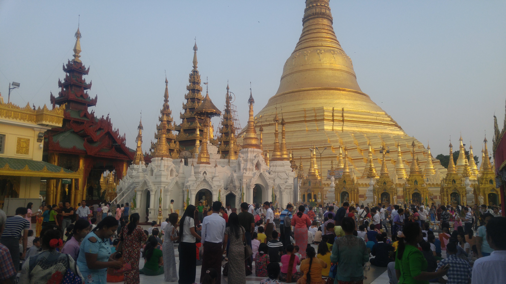

Go Back
Yangon

Yangon is the largest city in Myanmar and was the former capital. I quite enjoyed exploring this city which has remained very closed off from the rest of the world. Life here moves at it's own pace and is very different from most other cities I've seen. I found the people to be very friendly and kind. Some of my favourite things to see and do were visiting the famous Shwedagon Pagoda, wandering around an abandoned amusement park and just walking around and exploring the city. Here is my travel advice for Yangon. Note that due to the current security situation things may have changed.
The Shwedagon Pagoda is the most sacred buddhist pagoda in Myanmar. It's imposing size dominates the skyline of the city. I'd go as far as saying it's the most impressive pagoda complex I've ever seen too after travelling years throughout Southeast Asia. According to tradition, the Shwedagon Pagoda was constructed more than 2,500 years ago, which would make it the oldest Buddhist stupa in the world. It's also been the site of different historical events in Myanmar including the 2007 protests against the ruling military junta. Protesting monks were denied entry to the pagoda for several days until the military government relented and let them in. The pagoda itself is made from real gold. The lower stupa is plated with 8,688 solid gold bars, and upper part is plated with another 13,153. The estimated cost of the gold used for building the pagoda today would be billions of dollars. It costs about 8 usd to enter and is certainly the highlight of Yangon and is a must see if you visit the city. You will see not only the main pagoda but an impressive complex with many beautifully designed buildings and thousands of people visiting and praying. It was one of the most unique cultural experiences I've ever had.
If you type Abandoned Amusement Park into google maps while in Yangon you'll see a pin come up in a large park near the Rose Garden Hotel. There is an abandoned amusement park hidden in the forest here. You can make your way in for free fence under the and explore the eerie park. It's not by any means as exciting as visiting the Shwedagon Pagoda but I thought it was a cool experience in Yangon.
The majority of my time in Yangon I spent walking around exploring the downtown area near my hostel. There are many interesting sites to see and I enjoyed just getting lost somewhere so different from where I'm from. You'll see many street markets and how everyday life is for locals. You can see the Sule Pagoda in downtown Yangon and walk down by the riverside for some good sightseeing opportunities. There aren't many tourists here compared to other Southeast Asian countries and now in 2022 even less so than before. Many people will look at you with curiosity and you will feel the true spirit of adventure.
There were a good variety of restaurants in downtown Yangon including many local places, some big name fast food chains like Lotteria and even all you can eat buffet style restaurants. I only spent 4 days here and didn't really recall many of the names of places I ate at. One place that is popular with locals and tourists alike is 999 Shan Noodles. Shan Noodles is sticky rice noodle with chicken tomato sauce and lots of flavourful garlic, chilli and pickle toppings. For an authentic Burmese dish I recommend trying this. Otherwise just wander around with an open mind and see what you can find. Pictured below was a nice chicken vegetable stirfry I had with rice.
Downtown Yangon is probably the best part of the city to stay in for foreigners. The streets are arranged by grid so it's one of the easier cities to navigate that I've seen in Southeast Asia. The hostel I stayed at back in 2018 is no longer open unfortunately so I can't really recommend a specific place to stay anymore but there are many hotel and hostel options even today. In downtown Yangon you'll find restaurants, a few bars, cafes, street markets, stores, massage and different local businesses. The architecture is very old and fascinating. One cool feature common here is that people hang ropes from their high level rooms in apartments and people deliver things by attaching it to the rope. The person in the room pulls the rope up to recieve their products.